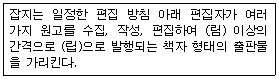
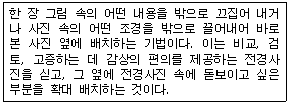

전자출판기능사 (2004-10-10 기출문제)
1과목: 출판론
1. 오프셋 인쇄기를 크기로 구분한 것이 아닌 것은?
- 국반절 인쇄기
- 4x6 전지 인쇄기
- 4절 인쇄기
- 4도 인쇄기
(정답률: 94%)

2. 비닐로 책의 표지를 만드는 방식으로 투명한 비닐 커버를 주머니처럼 만들어 표지를 끼우는 방식과 비닐 표지와 면지를 붙이는 방식이 가장 많이 사용되는 제책방식은?
- 스프링 제책
- 고주파 제책
- 호부장 제책
- 트윈링 제책
(정답률: 76%)
3. 감광액을 스폰지를 사용하여 손으로 직접 도포하고 자연건조 후 제판하는 판은?
- 난백판
- 평오목판
- PS판
- 와이프온판
(정답률: 54%)
4. 제판시 광원의 거리가 변경된 경우 적정 빛쬠시간을 기준으로 적정 빛쬠량을 구하는 식은?
- (원래의 거리/변경한 거리)2 × 원래의 빛쬠시간
- (변경한 거리/원래의 거리)2 × 원래의 빛쬠시간
- (원래의 빛쬠시간/변경한 빛쬠시간)2 × 원래의 거리
- (변경한 빛쬠시간/원래의 빛쬠시간)2 × 원래의 거리
(정답률: 47%)
5. 스크린 인쇄의 인쇄회로기판 제작에서 인쇄회로를 인식할 수 있도록 하는 인쇄는?
- 마킹 인쇄
- 설계도면 인쇄
- 코팅 인쇄
- 솔더 인쇄
(정답률: 67%)
6. 색의 분류에 대한 설명으로 옳지 않은 것은?
- 크게 무채색과 유채색으로 나뉜다.
- 유채색은 채도가 있는 색이다.
- 무채색은 색상, 명도, 채도의 색의 3속성을 모두 가지고 있다.
- 무채색의 구별은 명도로 한다.
(정답률: 92%)
7. 전략으로서의 출판기획에 대한 설명이 옳은 것은?
- 어떤 출판물을 만들 것인가에 대하여 뚜렷한 목표설정이 없어도 된다.
- 출판물을 만드는데 가장 적합한 저자를 선택하고 원고를 만드는 일이 후속되어야 할 것이다.
- 출판물의 조성방법, 원가계산, 정가책정 등의 전반적인 입안은 필요없다.
- 광고, 선전, 판매방법, 발행시점 등 구체적인 입안 등이 필요없다.
(정답률: 88%)
8. 출판의 분류와 그 기준이 가장 적절하게 연결된 것은?
- 내용에 의한 분류 : 상제본, 반양장본, 가제본 등
- 제책에 의한 분류 : 4x6배판, 국판, 4x6판, 국반판 등
- 표지의 종류에 의한 분류 : 하드백(hardback), 페이퍼백(paperback)
- 판형에 의한 분류 : 총류, 철학, 종교, 사회 과학, 어학, 순수과학, 응용과학, 예술, 문학, 역사 등
(정답률: 50%)
9. 한국산업규격으로 제정되어 사용되고 있으며 우리나라 교육용으로도 채택된 표준 표색계는?
- 먼셀 표색계
- 오스트발트 표색계
- 문. 스펜서의 표색계
- 뉴턴의 표색계
(정답률: 86%)
10. 판매의 처음 시작은 그리 요란하지 않지만, 언제 어디서든 꾸준하게 팔리는 책 또는 견실하게 팔리는 책을 가리키는 말은?
- 패스트셀러(fast seller)
- 스테디셀러(steady seller)
- 베스트셀러(best seller)
- 무크(mook)
(정답률: 82%)
11. 출판기획의 성공여부 평가에서 가장 객관적인 방법은?
- 독자반응의 평가
- 대중매체의 평가
- 전문비평가의 평가
- 타출판사의 유사도서와 비교평가
(정답률: 79%)
12. 연속간행물을 개별화시키는 고유번호를 뜻하는 것은?
- ISSN
- ISBN
- VAN
- POS
(정답률: 61%)
13. 어떤 하나의 색상 중에서 무채색의 포함량이 가장 적은 것을 뜻하는 것은?
- 순색
- 보색
- 유채색
- 혼색
(정답률: 65%)
14. 다른 판식에 비해 와이프온판의 특징과 가장 거리가 먼 것은?
- 제판처리 가격이 비교적 높다.
- 온,습도의 영향이 적은 편이다.
- 내쇄력이 좋은 편이다.
- 제판 처리가 간단하다.
(정답률: 39%)
15. 그라비어 인쇄의 장점과 가장 거리가 먼 것은?
- 타인쇄 방식에 비해 가장 제조원가가 저렴
- 고속인쇄가 가능
- 크롬을 도금한 판은 내쇄력이 강화됨
- 풍부한 농담재현 가능
(정답률: 67%)
16. 제책공정에서 본문과는 별도로 인쇄하여 본문의 전후 혹은 중간에 부속물 인쇄 등을 끼워 넣는 것을 무엇이라 하는가?
- 쪽맞추기
- 딴쪽접기
- 고르기
- 원형내기
(정답률: 64%)
17. 출판물의 정가 판매제의 장점이 아닌 것은?
- 출판사 입장에서는 수익을 정확히 예측할 수 있다.
- 독자가 어디에서나 같은 가격으로 구입할 수 있다.
- 판매이익이 같으므로 영세서점이 보호될 수 있다.
- 반품도서와 장기 재고도서를 쉽게 판매할 수 있다.
(정답률: 70%)
18. 서적의 요건으로 가장 적합하지 않은 것은?
- 출판되어 공중이 이용할 수 있어야 한다.
- 일정한 분량이 있어야 한다.
- 어떤 목적을 가진 내용이 들어 있어야 한다.
- 광고의 목적으로 간행되어야 한다.
(정답률: 77%)
19. 출판물을 제작할 때 필름출력 과정을 생략하고 곧바로 인쇄판을 출력하는 의미의 용어는?
- CTP
- DTP
- WYSIWYG
- CTS
(정답률: 50%)
20. 어떤 특정한 일을 대상에 적용할 때 그에 걸맞은 정도로서, 창의의 결과를 어떻게, 어떤 대상에 적용할 것인가를 판단하는 요건은?
- 적시성
- 적응성
- 적의성
- 채산성
(정답률: 50%)
2과목: 전자 출판
21. 전자책의 특징을 설명한 것이 아닌 것은?
- 멀티미디어가 가능하다.
- 전용 단말기를 이용하여 볼 수 있다.
- 하이퍼텍스트 기능이 가능하다.
- 유통 비용이 많이 든다.
(정답률: 89%)
22. 다음 중에서 전산편집 작업에 가장 많이 이용되고 있는 프로그램은?
- Quark-Xpress
- 한글 2002
- FrontPage
- 파워포인트
(정답률: 84%)
23. HTML의 미약한 기능을 보완하고, SGML의 복잡한 구조를 단순화시킨 것으로서, 지금까지 사용해 왔던 HTML과 마찬가지로 웹상에서 문서를 전송하도록 설계된 국제 표준 텍스트 형식은 무엇인가?
- XML
- FLASH
- DOI
- FTP
(정답률: 86%)
24. CD-ROM 전자출판물 제작과정 중 완성된 멀티미디어 타틀을 시험하는 과정으로 잘못된 내용이 없는지 찾아내 수정하는 단계를 무엇이라고 하는가?
- 디버깅
- 프리마스터링
- 마스터링
- 상품화단계
(정답률: 80%)
25. 다음 중 비종이책 전자출판의 가장 적절한 사례는?
- 광개토대왕 비석 탁본 출판
- 통신망에 연결된 화면책 출판(e-book 포함)
- 탁상출판(DTP)
- 이집트의 파피루스
(정답률: 67%)
26. CD-ROM과 같이 패키지형 전자출판의 단점이 아닌 것은?
- 모든 정보가 전자적으로 기록되어 그 내용을 직접 눈으로 확인할 수가 없다.
- 기록되어 있는 내용을 보기 위해서는 특정의 전자장치가 필요하다.
- 포맷 방식의 차이에 따라 서로 다른 방식의 컴퓨터를 사용하지 않아도 된다.
- 항상 새로운 기술에 맞도록 기록된 정보를 보강하거나 변환시켜야 할 필요가 있다.
(정답률: 70%)
27. 다음 중 온라인상에서 파일을 전송하는 프로토콜은?
- DOI
- FTP
- XML
(정답률: 57%)
28. 워드프로세서로 입력한 문자 파일을 편집용 프로그램으로 가져오기 한 결과 본래의 문자가 아닌 이상한 기호로 모니터에 나타났다. 어떠한 특성이 서로 다르기 때문인가?
- 문자 코드
- 문자 크기
- CPU
- 모니터
(정답률: 92%)
29. 다음 중 애니메이션, 투명기능 등을 지원할 수 있어 인터넷상에서 표준 그래픽 포맷으로 사용되는 것은?
- JPG
- PNG
- GIF
- EPS
(정답률: 64%)
30. CD-ROM 제작시에 사용되는 스토리보드(Story board)란 무엇인가?
- 일반적인 이야기 전개방식을 말한다.
- 멀티미디어 제작시 내용을 화면단위로 제시한 구체적인 작업지시서이다.
- 멀티미디어 제작 후 테스트를 하기위한 작업지시서이다.
- 기획단계에서 만들어지는 작업흐름도(Flow chart)이다.
(정답률: 76%)
31. 중앙처리장치(CPU)의 구성요소가 아닌 것은?
- 기억장치
- 연산장치
- 제어장치
- 출력장치
(정답률: 59%)
32. 멀티미디어 요소 중 사운드 파일 포맷이 아닌 것은?
- PCM
- GIF
- WAV
- MIDI
(정답률: 79%)
33. 다음 중 전자출판물을 제작할 때 가장 많은 내용을 저장할 수 있는 매체는?
- zip 디스크
- Jaz 디스크
- CD-RW
- DVD
(정답률: 75%)
34. 컴퓨터를 이용해 원고작성, 조판, 교정, 레이아웃, 사진의 처리, 인쇄용 필름의 출력 등 종이 출판물의 제작에 필요한 작업을 처리하는 방식은?
- POD
- OCR
- DTP
- HWP
(정답률: 94%)
35. 종이문서 레이아웃이나 해상도를 화면상에서 그대로 유지하고자 하는 신문, 잡지, 단행본, 카탈로그 등의 디지털문서에 유용하게 활용할 수 있는 정보 표현 포맷은?
- HTML
- XML
- DOI
(정답률: 87%)
36. CTP(Computer to Plate)를 바르게 설명한 것은?
- 편집 데이터에서 필름으로 출력하는 과정을 생략하고 인쇄판을 제작하는 것이다.
- 데스크 탑 컴퓨터로 레이아웃 필름을 완벽하게 처리해 내는 과정을 말한다.
- 편집 데이터에서 필름을 한 쪽씩 출력하는 과정을 말한다.
- 편집 데이터에서 필름과 인쇄판의 출력을 생략하고 바로 인쇄하는 과정을 말한다.
(정답률: 53%)
37. 전자출판 응용 프로그램 중에서 Director, Tool book, Author ware와 같은 프로그램의 용도는?
- 사운드 파일 제작 프로그램
- 이미지 처리 프로그램
- CD-ROM 저작도구
- DTP용 소프트웨어
(정답률: 46%)
38. 다음 중 전자출판의 특징이라 볼 수 없는 것은?
- 전자출판은 컴퓨터의 하드웨어와 소프트웨어를 이용해서 책을 만드는 것을 말한다.
- 디스크 책을 만들 때에는 동영상과 음악 등도 함께 넣을 수 있어서 종이책의 한계를 넘은 멀티미디어 기능을 구현 할 수 있다.
- 전자출판은 종이책의 DTP 시스템뿐만 아니라 비종이책의 제작을 위한 HTML, XML 등의 소프트웨어의 발전에 따라 그 범위가 확대되었다.
- DTP는 종이책을 만드는 편집, 레이아웃 뿐만 아니라 동영상과 음향을 담을 수 있는 기술까지 포함한다.
(정답률: 55%)
39. 할러웨이(H.Holloway)가 전자출판에 대해 정의한 내용은?
- 디지털 신호를 이용한 컴퓨터와 다른 전자기기를 이용하여 전통적인 최종 문서형태의 출판을 의미한다
- 정보제공 매체의 전산화, 곧 종이가 아닌 전자매체를 이용해 출판하는 것만 뜻한다.
- 컴퓨터를 이용한 출판 행위를 말한다.
- 데이터베이스나 비디오텍스트와 같이 스크린상에 내용을 불러낼 수 있도록 컴퓨터 검색이 가능한 형태로 출판하는 것을 뜻한다.
(정답률: 61%)
40. 전자출판 시스템의 구성(작업순서)을 맞게 나열한 것은?
- 문자입력→ OPI서버→ 립→ 편집→ 이미지 세터→ 현상기
- 문자입력→ 립→ 이미지 세터→ OPI서버→ 편집→ 현상기
- 문자입력→ OPI서버→ 편집→ 립→ 이미지 세터→ 현상기
- 문자입력→ 편집→ 립→ 이미지 세터→ OPI서버→ 현상기
(정답률: 44%)
3과목: 전산 편집
41. 편집할 때 사용할 사진을 선택하는 방법 중 가장 바람직하지 않는 방법은?
- 안이한 사진보다는 생생한 사진을 고른다.
- 사진이 너무 흥미로우면 본문의 내용이 위축되므로 흥미로운 사진은 선택하지 않는다.
- 자세한 것까지 설명을 해주는 문장과도 같은 사진을 사용하는 것도 좋다.
- 연출된 인물사진은 진실이라는 측면에서는 맞지 않으므로 선택할 때 고려한다.
(정답률: 68%)
42. 일반적인 문자교정과 교열에 대한 설명이 아닌 것은?
- 맞춤법에 따른 오자와 탈자를 바로 잡는다.
- 외래어 표기와 용어의 통일 등의 문장을 바로잡는다.
- 입력과 편집과정에서 생긴 오류를 인쇄기록매체에 출력되기 전에 바로잡는 것이다.
- 그라데이션과 컬러를 수정한다.
(정답률: 91%)
43. 색분해를 하지 않고 이용할 수 있으며 반복해서 사용을 하여도 항상 동일한 품질을 기대할 수 있어 활용가치가 높은 사진원고는?
- 컬러필름 원고
- 일반컬러사진 원고
- 디지털사진 원고
- 컬러잡지 원고
(정답률: 50%)
44. 듀이의 십진분류법에서는 제외되었지만, 국내의 출판산업에서 중요한 분야로 취급되어 각종 통계치를 계산할 때 포함시키는 항목은?
- 아동도서, 학습참고서
- 철학, 종교
- 어학, 순수과학
- 예술, 응용과학
(정답률: 71%)
45. 출판물의 한 페이지 내에 글자가 인쇄되어 있는 면을 제외한 외곽의 여백을 무엇이라 하는가?
- 판면
- 마진
- 본문
- 마운트
(정답률: 75%)
46. A5판형(국판형)과 가로 길이는 같지만 세로 길이가 큰 것(148x225mm정도)으로 일반 단행본에 많이 사용되고 있는 일반적인 판형 이름은?
- 국판
- 신국판
- 크라운판
- 타블로이드판
(정답률: 63%)
47. 사진 트리밍(trimming)에 대한 설명 중 가장 옳은 것은?
- 원화의 효과를 극대화시키는 작업이다.
- 출판물 제작 전반에 대한 지식이 없어도 정확한 트리밍은 가능하다.
- 독자의 시선 흐름을 고려하지 않아도 된다.
- 주제 이외의 부분을 포함시키는 것이 좋다.
(정답률: 86%)
48. 편집 디자이너가 알아두어야 할 유의 사항으로 적절하지 못한 것은?
- 인쇄방법이 적당한지 검토한다.
- 인쇄 제작 공정에서 나타나는 문제점은 미리 체크하지 않아도 된다.
- 적절한 인쇄 업체를 선정하는 것이 중요하다.
- 제작 완료 시점을 예상하여 가공 처리 기간을 결정한다.
(정답률: 87%)
49. 다음 림, 립 안에 들어갈 용어로 가장 적당한 것은?

- 림 월(月) 립 정기적
- 림 월(月) 립 부정기적
- 림 주(週) 립 정기적
- 림 주(週) 립 부정기적
(정답률: 84%)
50. 다음 중 획의 굵기가 가장 굵은 서체는?
- 세명조
- 중명조
- 태명조
- 견출명조
(정답률: 69%)
51. 전문서적의 내용을 처음 개정하여 발행하였을 때, 판권지에 가장 바른 표기는?
- 초판 2쇄
- 초판 1쇄
- 2판 1쇄
- 재판 2쇄
(정답률: 58%)
52. 타이포그래피(Typography)를 가장 바르게 설명한 것은?
- 문자를 만들고 레이아웃을 설정하는 문자조판 기술 및 그 분야의 연구를 의미한다.
- 폰트 등의 구체적인 문자의 형태만을 의미한다.
- 활판인쇄술을 의미한다.
- 문자의 집합체를 의미한다.
(정답률: 69%)
53. 알파벳 글자 중 ff, fi, ffi 등과 같이 두 개 이상의 글자가 한 단위로 결합되어 합자된 것을 무엇이라 하는가?
- 로어케이스(lowercase)
- 리가츄어(ligatures)
- 픽셀(pixel)
- 링크(link)
(정답률: 70%)
54. 본문의 정렬방식 중에서 문단의 앞쪽과 뒤쪽 모두 일직선상에 나란히 정렬하는 방식은?
- 왼쪽맞추기
- 오른쪽맞추기
- 양쪽맞추기
- 가운데 맞추기
(정답률: 79%)
55. 한 장의 사진을 여러 번 사용함으로써 얻는 효과가 아닌 것은?
- 사진의 모서리를 겹치고 사진의 크기를 증가시키면 정적인 느낌을 준다.
- 사진을 작은 요소들로 나누어서 일렬로 배치하면 장면들의 점차적인 변화를 보여줄 수 있다.
- 사진을 위아래로 대칭시켜 심리적으로 반사되는 착각을 일으킨다.
- 같은 사진을 점차 크게 만든 다음에 배치시켜 성장이나 침몰을 나타낸다.
(정답률: 65%)
56. 평면 레이아웃의 원리로서 대조에 대한 설명으로 적절하지 않은 것은?
- 대조의 효과는 크기, 색채, 형태, 방향 등에서 모두 가능하다.
- 한 면에 2개 이상의 사진을 배치할 때에는 형태와 방향은 대조를 두어도 크기는 균형에 맞추어 언제나 같은 크기로 해야 한다.
- 사진이나 문자 지면이 같은 형태이면 지면이 단조로워지기 쉽기 때문에 변화를 줄 필요가 있다.
- 색채의 대조에서는 서로 다른 색채간의 대조와 흑백 단색의 경우처럼 농담에 의한 대조를 생각할 수 있다
(정답률: 75%)
57. 고해상도 프린트 방법으로 고체인 염료가 기체로 변화하는 디지털 교정 방식은?
- 잉크젯 프린터
- 버블젯 프린터
- 염료승화형 프린터
- 열전사식 프린터
(정답률: 75%)
58. 타이포그래피에서 불규칙하게 보이는 특정한 두 글자 사이의 공간들을 시각적으로 균일하게 보일 수 있도록 조정하는 것을 일컫는 말은?
- 커닝(kerning)
- 트래킹(tracking)
- 파이카(pica)
- 유니트(unit)
(정답률: 56%)
59. 다음에 설명하는 사진배치 기법은?

- 몽타주 처리(montage work) 기법
- 드롭 아웃 처리(drop out) 기법
- 아웃포커스 처리(out focus work) 기법
- 그리드 시스템 처리(grid system work) 기법
(정답률: 63%)
60. 다색 원고에 대한 설명 중 옳은 것은?
- 다색 원고는 보통 1색에서 6색까지를 의미한다.
- 보통 4색까지는 기본값이고, 1색 추가시마다 제판비가 올라간다.
- 보통 4원색으로 인쇄를 하기 위해서는 컬러스캐너로 사진 원고를 원색분해하기도 한다.
- 컴퓨터 모니터에서 보는 RGB라는 빛의 3원색을 인쇄시 인쇄용의 RGB 모드로 출력해야 한다.
(정답률: 56%)